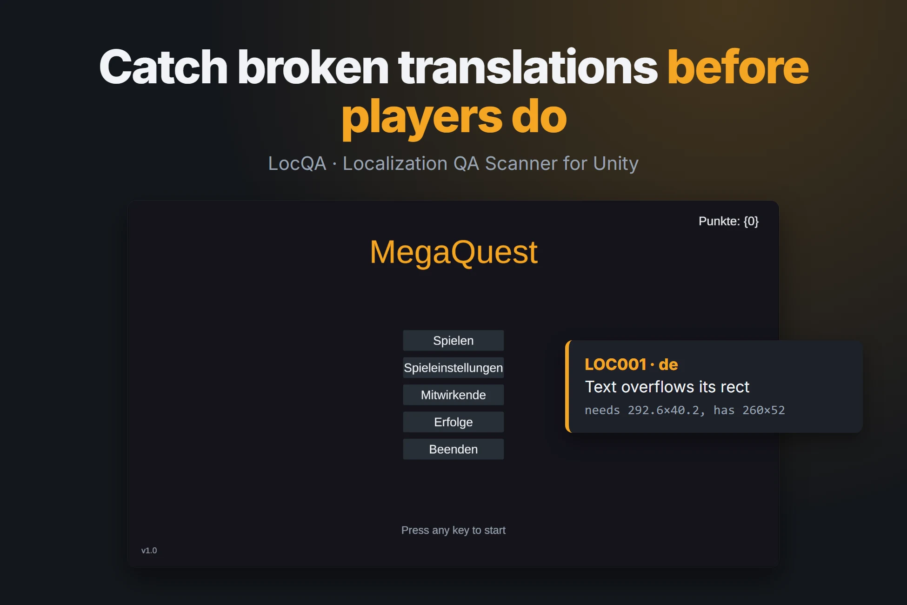
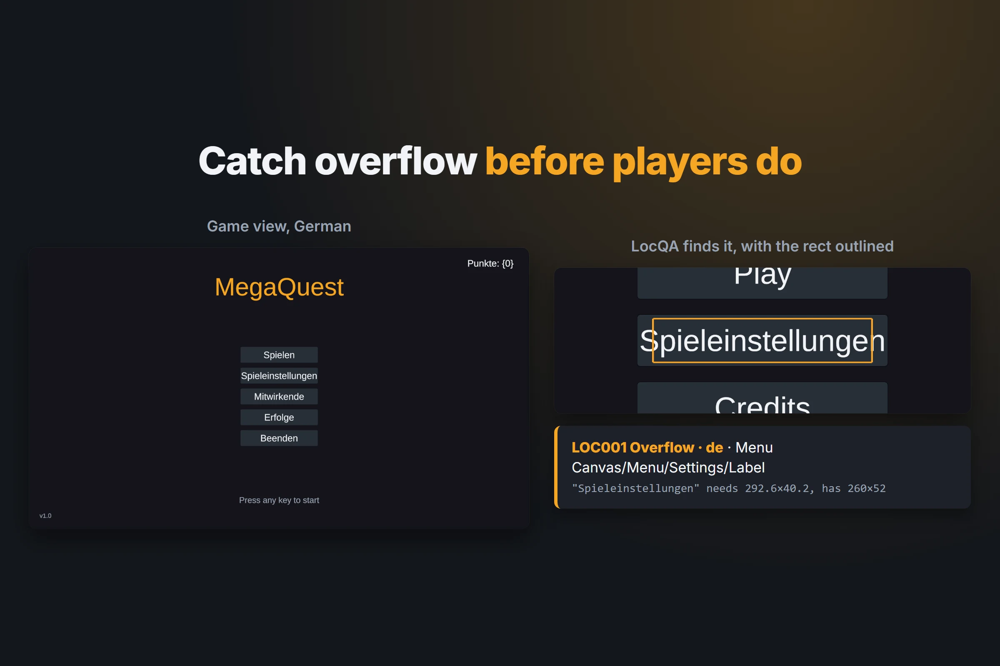
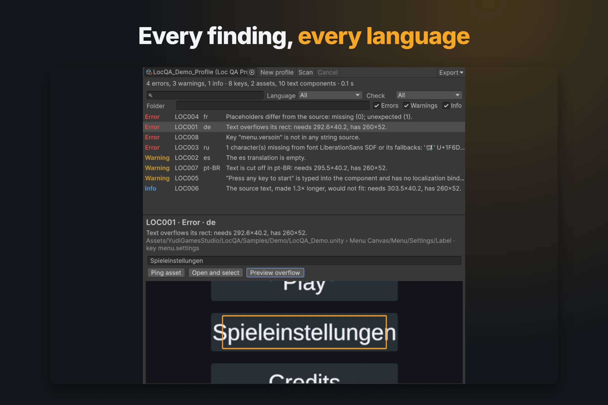
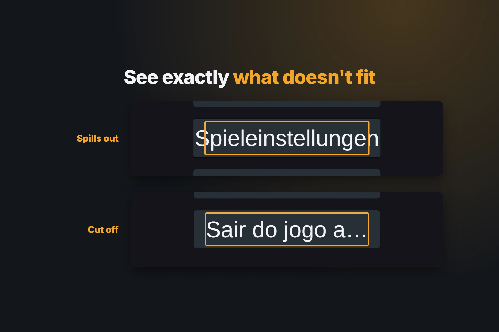
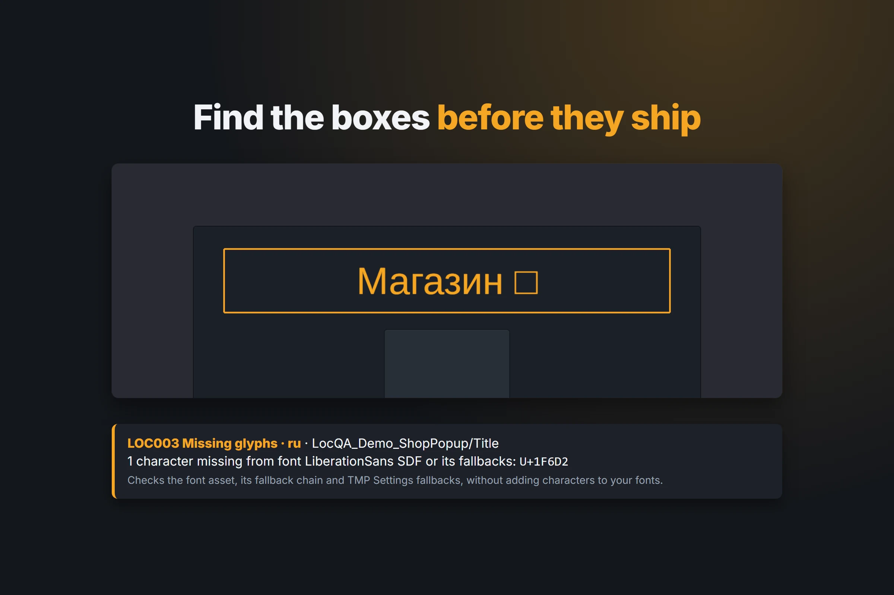
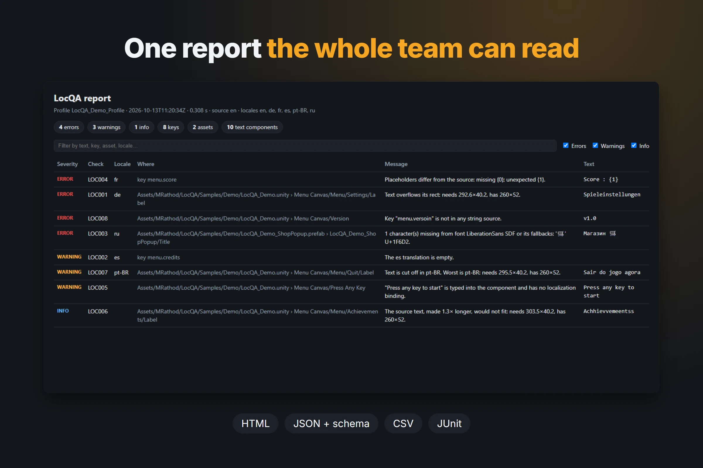
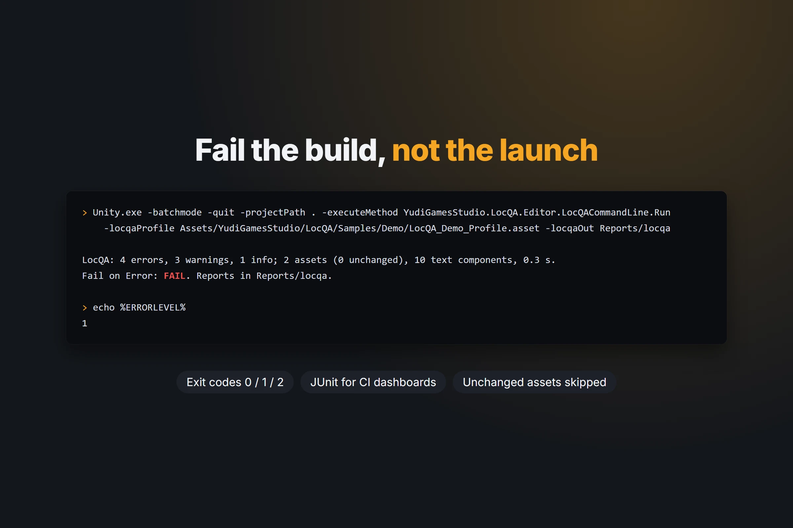
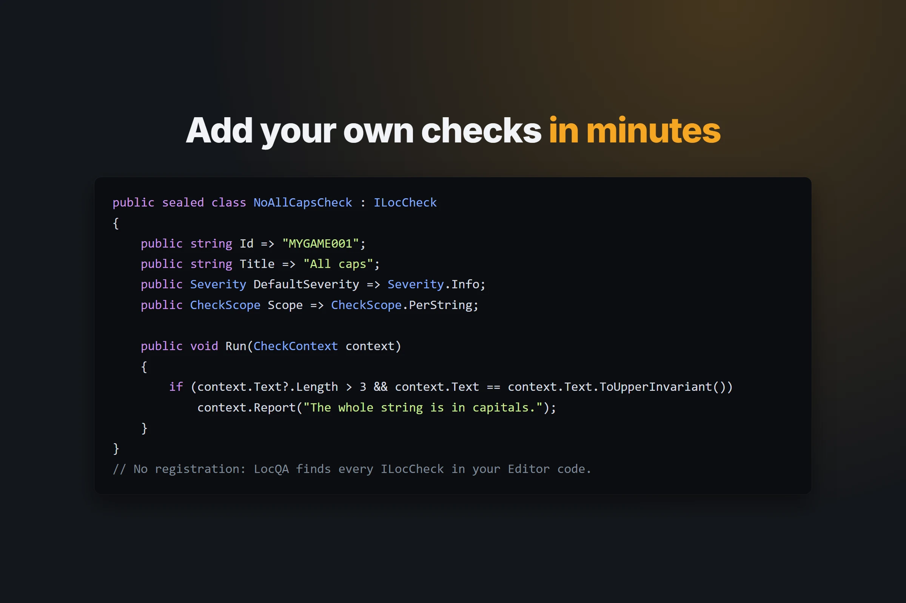
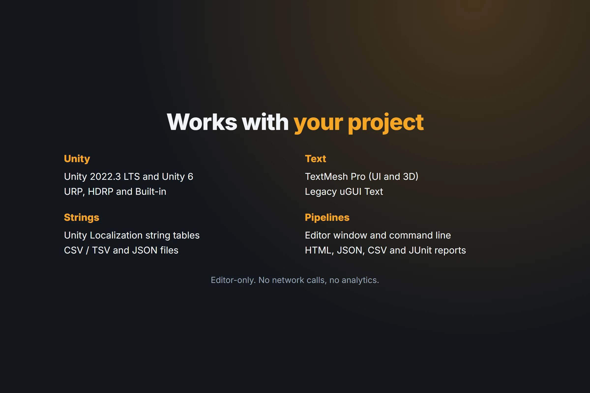

LocQA
Catch overflowing, missing and broken translations in every language, in the Unity Editor and in CI.

The problem
Translated text breaks UI in ways you only see on a tester's phone, in a language you don't read. A German
label runs past its button, a Russian title shows empty boxes, a French string loses its {0}.
LocQA measures every localized string against the real text component it appears in, with your fonts, sizes and layout settings, and shows exactly where it won't fit, which glyphs are missing, and which translations are empty or broken.
Features
- Finds text that overflows its box, per language, measured with TextMesh Pro's own layout engine
- Finds characters your fonts and their fallbacks can't draw
- Catches empty translations and mismatched placeholders and rich-text tags
- Finds hard-coded text in scenes and prefabs that was never localized
- Checks that source text has room to grow, before any translation exists
- Jumps to the failing object, with a preview of the overflowing text
- Reads CSV and TSV (with a column-mapping wizard), JSON files and Unity Localization string tables
- Runs in CI from the command line, with exit codes and HTML, JSON, CSV and JUnit reports
- Re-scans only what changed
- Takes your own checks and string sources through a small C# interface
Scans 500,000 strings and 10,000 text components across 2,000 prefabs in under a minute, and re-scans in seconds when nothing changed (laptop i7-11370H, 16 GB RAM).
Screenshots
















Works with
- Unity 2022.3 LTS and Unity 6
- Built-in Render Pipeline, URP and HDRP
- TextMesh Pro and legacy uGUI Text
- Unity Localization, optional
- Any build target: LocQA runs in the Editor and adds nothing to your builds
Data handling
- Runs entirely in the Editor, with no network calls and no analytics
- Reads your prefabs, scenes and string files, and never changes them
- Writes only its settings, its cache and the reports you export
Known limitations
- UI Toolkit text isn't scanned yet.
- Text is measured at the profile's reference resolution; use one profile per resolution that matters.
- Text that scripts set at runtime is checked only when its component is bound to a key.
- Rows in layout groups whose widths depend on each other are approximated.
- Fonts that use operating-system fonts can't be inspected for missing glyphs.
- No text shaping is added for Arabic and similar scripts; text is measured as TextMesh Pro draws it.
Manual
The full manual ships with the package and is here to read before you buy: LocQA Manual (PDF).
Support
Email yudigamesstudio@gmail.com with your Unity version and LocQA version. Replies within 48 hours.